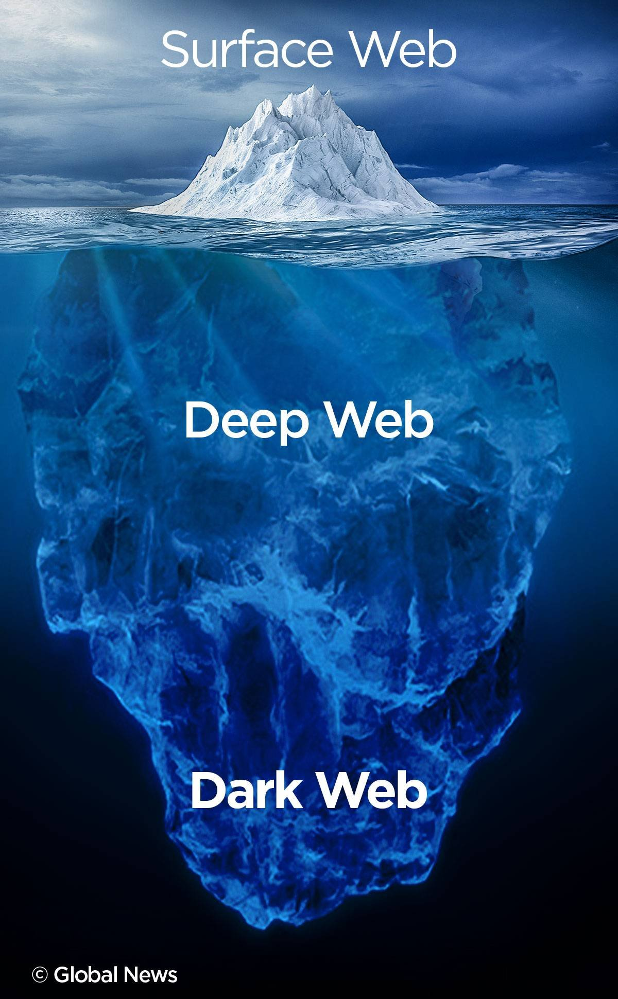

The “dark web” is a part of the world wide web that requires special software to access. Once inside, web sites and other services can be accessed through a browser in much the same way as the normal web. However, some sites are effectively “hidden”, in that they have not been indexed by a search engine and can only be accessed if you know the address of the site. Special markets also operate within the dark web called, “darknet markets”, which mainly sell illegal products like drugs and firearms, paid for in the cryptocurrency Bitcoin. There is even a crowdfunded “Assassination Market”, where users can pay towards having someone assassinated. Because of the the dark web’s almost total anonymity, it has been the place of choice for groups wanting to stay hidden online from governments and law enforcement agencies. On the one hand there have been whistleblowers using the dark web to communicate with journalists, but more frequently it has been used by paedophile groups, terrorists and criminals to keep their dealings secret.
Crime is that dark side of society that’s too omnipresent to be overlooked. It’s a bane to the harmony of society but it’s hard to argue with the fact that humans, in general, tend to invest in activities where the returns are much higher than the effort needed to be put in and the risk of loss is much lower. The skill and expertise of a pickpocket or shoplifteris of no debate, and when a particular skillset enables someone to make a profit out of it, he is inclined to tap that resource no matter how morally dubious be the act. Over time, criminals have had to adapt new techniques and arm themselves with better equipment to keep up with ever changing technology..
Over the past two decades or so, computers and the internet have become an integral part of our everyday lives. People of all ages depend on digital technology, right from kids for games to teenagers who use it for educational and recreational activities like chatting, and adults who use it to make life much simpler and more productive. Almost every aspect of life has become digital, be it bank transactions or product purchase. It’s high on accessibility, interactability and convenience. What’s not to like? Unfortunately, this also makes it a hotspot for criminal activity. Because of the ease of access, and the potential damage that could be caused, cybercriminals are, in the modern world, perhaps the most dangerous type of criminals in existence. No wonder cyber crime has risen to the top priority for most governments to tackle, seeing how it’s a constant threat to individuals, businesses and politics.